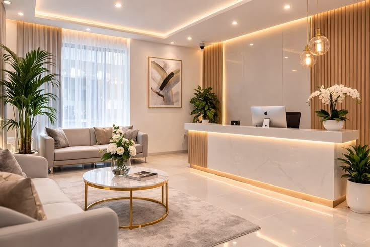

Área demonstrativa. Os artigos não são orientações clínicas nem representam autoria ou revisão médica. Conteúdo de saúde futuro deve passar pela revisão do profissional responsável.
Atendimento
A primeira conversa: espaço para suas perguntas.
Uma apresentação do diálogo inicial e dos assuntos que o site pode ajudar a organizar.
Ler artigoInformação
Informação clara, escolhas com contexto.
O papel de um conteúdo informativo sem promessas prontas nem decisões automáticas.
Ler artigo
Institucional
Conheça o nosso espaço antes da visita.
Uma proposta editorial para apresentar ambiente, acesso e canais de atendimento.
Ler artigoNenhum artigo encontrado para esta busca.
3 artigos demonstrativos